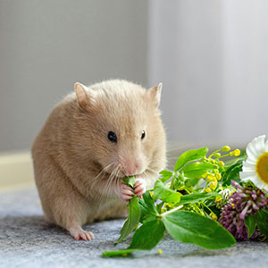
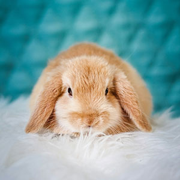
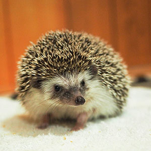
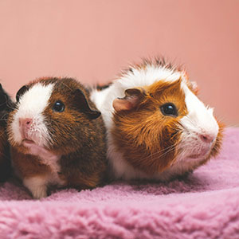
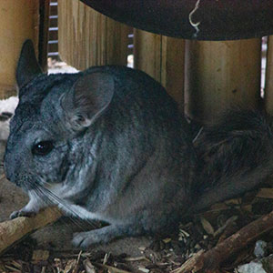
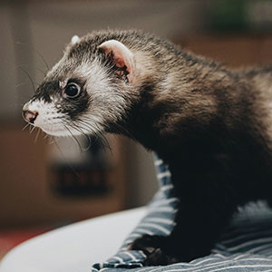
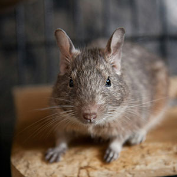
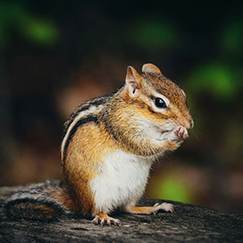
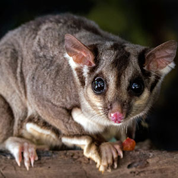

ハムスター
よく動いて、見ていて飽きない小さなアクティブさん。
この種類の詳細を見るtiny paws market
PET
tiny paws market で出会える、小さな家族たちをご紹介します。
気になる子の種類をチェックして、あなたに合う小さな相棒を見つけてください。

よく動いて、見ていて飽きない小さなアクティブさん。
この種類の詳細を見る
人懐っこくて、なでられるのが大好きな子が多いタイプ。
この種類の詳細を見る
ちょっと恥ずかしがり屋な、夜行性のツンデレさん。
この種類の詳細を見る
ゆったりマイペースで、穏やかな性格の子が多いと言われています。
この種類の詳細を見る
ふわふわの毛並みと、好奇心いっぱいの性格が魅力です。
この種類の詳細を見る
とっても遊び好きで、スキンシップを楽しみたい方におすすめ。
この種類の詳細を見る
賢くて社交的。毎日コミュニケーションを楽しみたい方にぴったりです。
この種類の詳細を見る
ちょこちょこ動き回る姿が愛らしい、元気いっぱいの小さな探検家。
この種類の詳細を見る
大きな目とふわっと広がる膜が特徴の、夜行性のグライダーさん。
この種類の詳細を見る
小さな体ですが、どの子も長い時間をともに過ごす家族です。
種類ごとの性格や生活リズム、必要なお世話の量などを知ったうえで、
あなたのライフスタイルに合う子を選んであげてください。